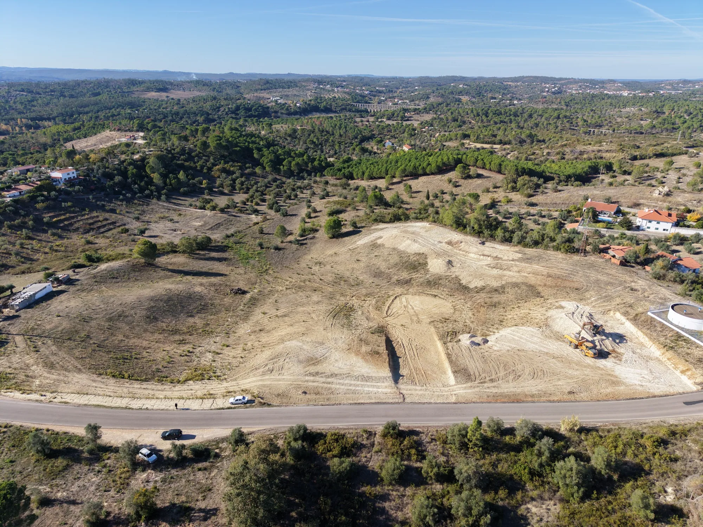
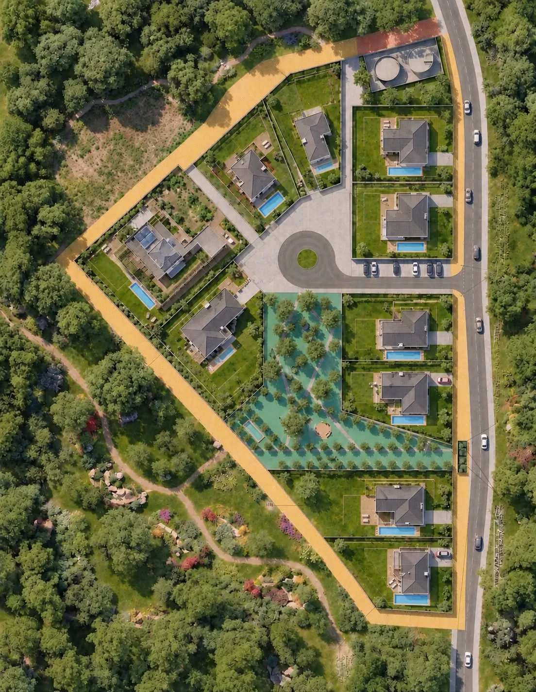
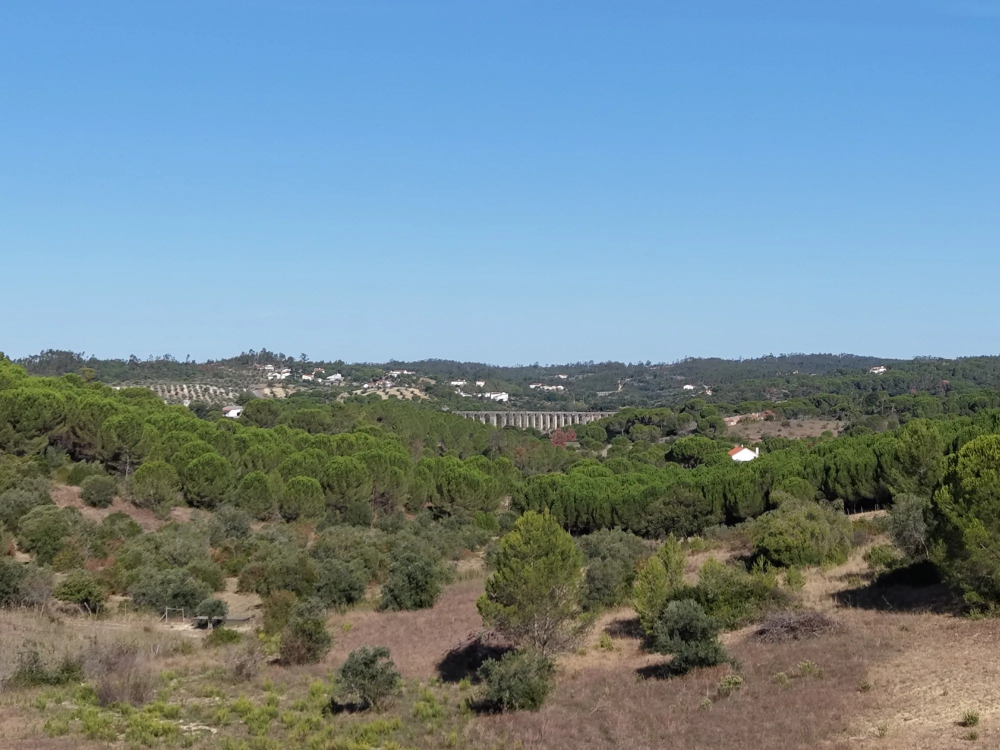
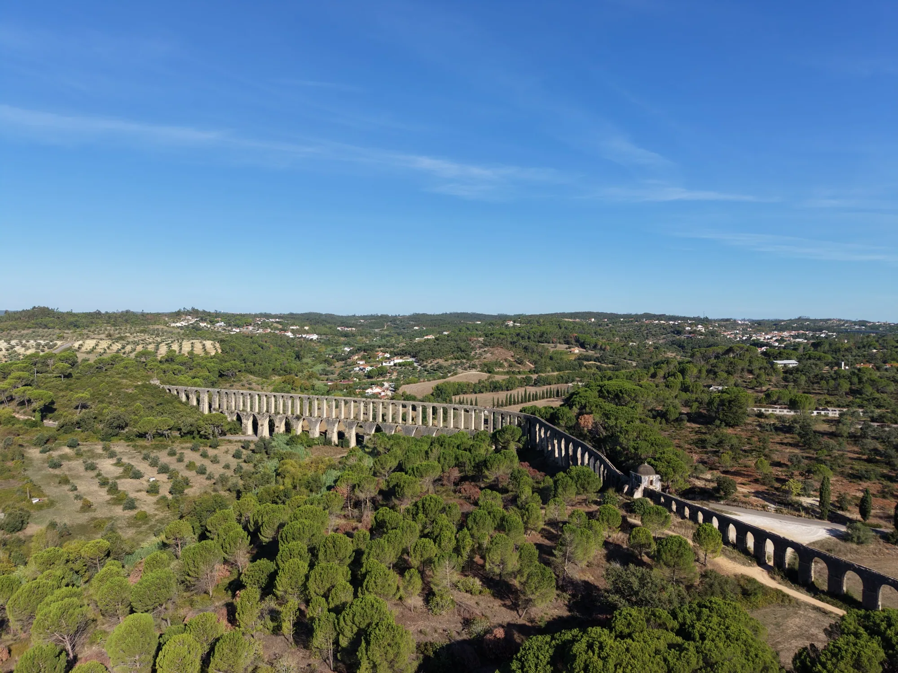
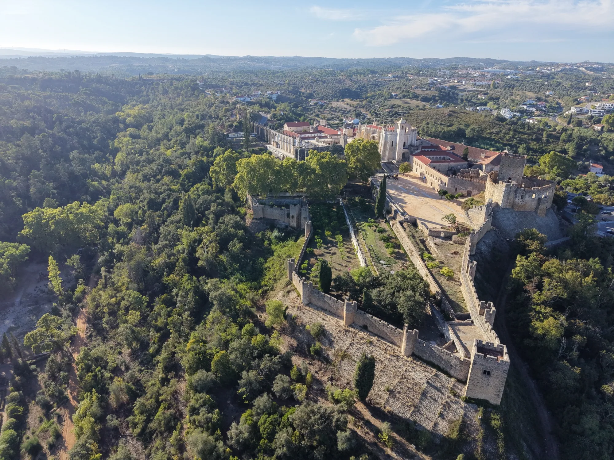
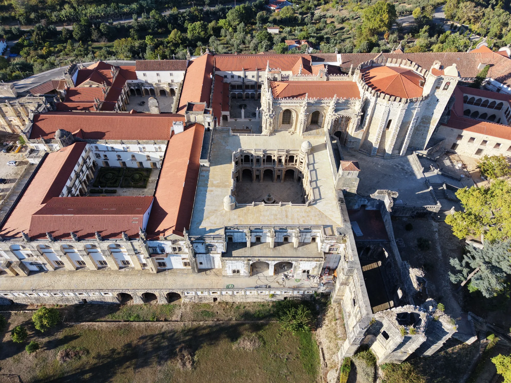
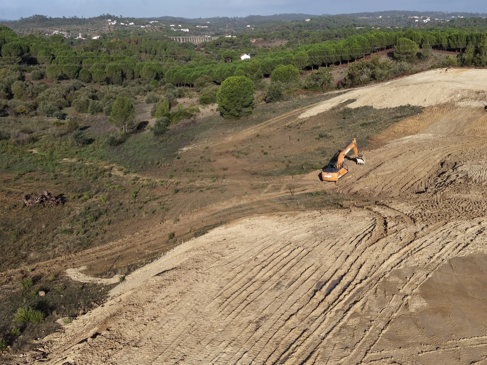
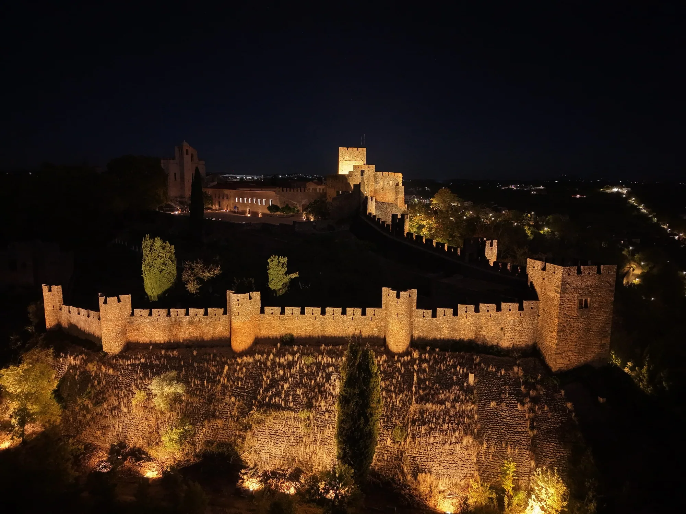
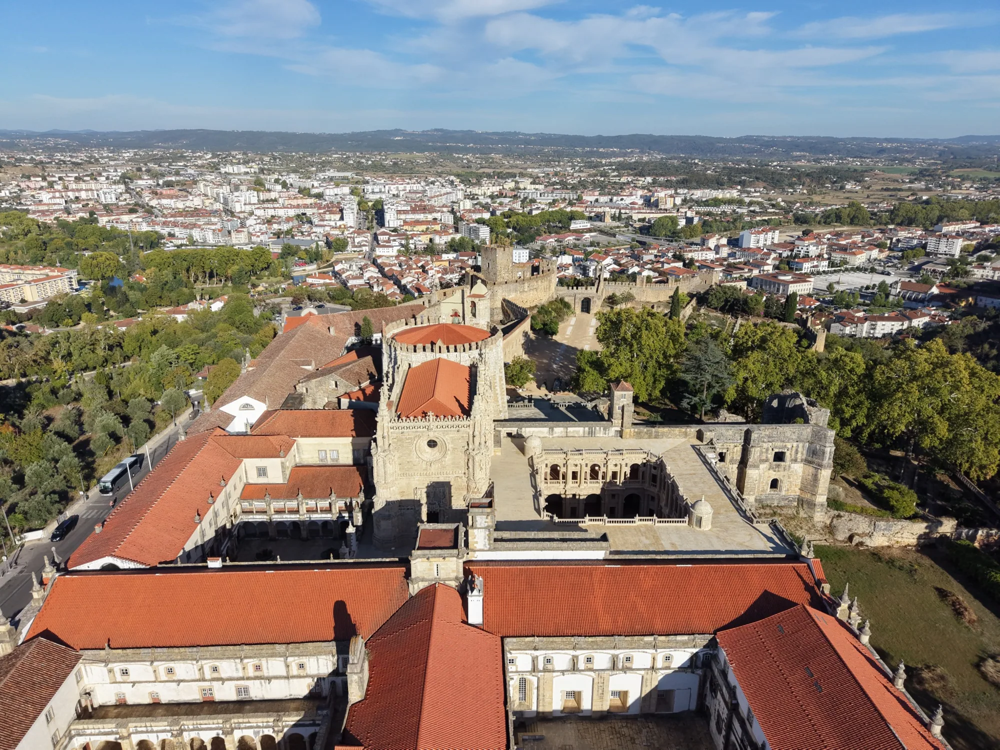

Onde o património encontra o futuro.
Um condomínio privado de 10 lotes, com projetos aprovados, numa paisagem marcada pela história e pela natureza.
Descobrir o investimentoEspaço, privacidade e potencial aprovado.
Casal dos Peixinhos é uma oportunidade de aquisição integral de um condomínio privado em Tomar, com projetos aprovados e licenças pagas.

Um horizonte com identidade.
Na envolvente de Tomar, próximo do Convento de Cristo e do Castelo Templário, o empreendimento beneficia de uma paisagem natural com vista para o Aqueduto dos Pegões.
As fotografias documentam o terreno e a envolvente. As infraestruturas encontram-se por concluir.
Dez lotes. Uma visão coerente.
A simulação ilustra uma possível concretização residencial com espaços verdes e piscinas. É uma representação conceptual, não uma fotografia de construção concluída.
Consultar planta técnica (PDF)
Tomar, terreno e paisagem.






Uma oportunidade de investimento.
Venda do empreendimento completo no estado atual, com projetos aprovados e licenças pagas.
Possibilidade de aquisição com infraestruturas concluídas, mediante condições a acordar.
Solicitar informações
Vamos conversar sobre esta oportunidade.
Solicite informações adicionais ou uma apresentação técnica do empreendimento.